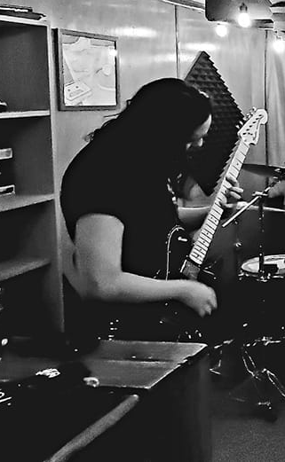

1 / 2
2 / 2

For as long as I have known, music has always been a huge part of my life. As a child, I was exposed to all types of music. The disco, funk and jazz came from my father and the spanish rock, bachata and other mexican music came from my mother. It wasn't until I was roughly in 4th or 5th grade that I discovered punk, post-harcore and other genres of rock that I still listen this day. As I was watching bands play on tv, it was only a matter of time till I picked up some instruments. The rest is history.
❮ ❯